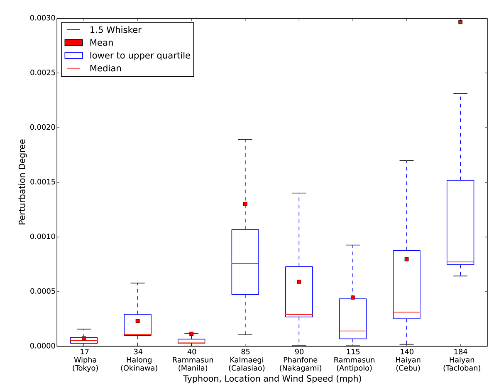
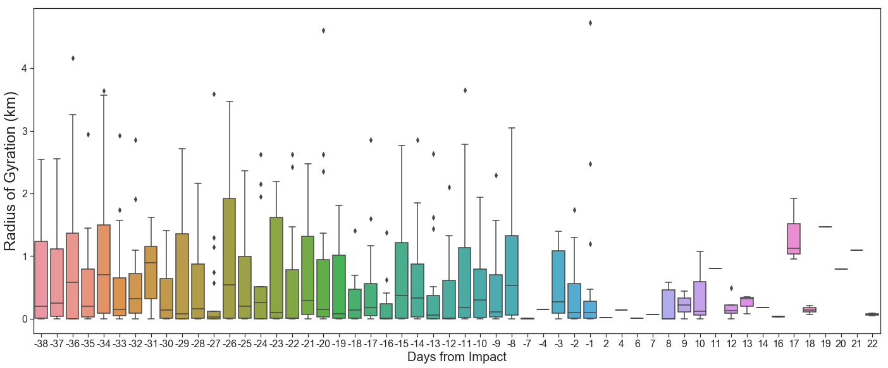

Additional Charts
Perturbation Strengths (dE)
Perturbation Strengths (dE) - 2013 to 2014 Study
We calculated the probability distribution for both the Impact Day (Dp) and a Normal Day (Ds), and let
dE = [dE (1), dE (2),…, dE (dmax)] be Euclidean distance between the two distributions.
Details

Radii of Gyration 2013-2014

Percentage Change Displacement

Tokyo, Japan - Typhoon Lan - Impact Monday, 2017-10-23, Norm starts Monday, 2017-10-09 (-14)
San Juan, Puerto Rico - Hurricane Maria
Tacloban, Philippines - Typhoon Haiyan, 2013-11-08, 184 mph
2013-10-28 normstart, spans 4 days.
2013-10-21 could provide 5 day norm, but is outside 33 day range (occurs 18 days prior).

Impact Charts